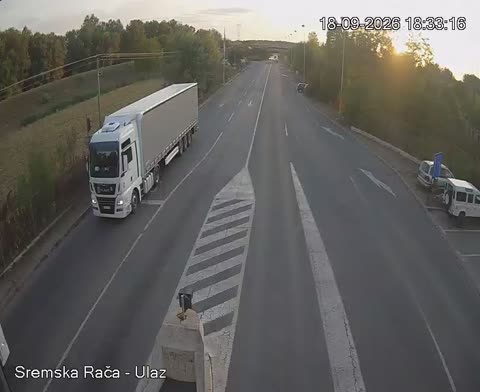

Sremska Raca connects Serbia and Bosnia and Herzegovina on route E70, opposite Raca (BiH). Gasolina combines border police data, a live camera and (where available) the neighbouring side for a realistic estimate.
The live camera and the current waiting estimate for both directions are at the top of this page, plus traffic on the map. To compare all crossings, open the Borders page.
Sremska Raca connects Serbia → Bosnia and Herzegovina, opposite Raca (BiH) on route E70.
We only write “No queue” when the estimate is 15 minutes or less. From 16 minutes upwards we show the number and the source it came from. When the traffic map measures a queue of 200 metres or more, we never write “no queue” whatever the minutes say — a measured queue is stronger evidence than an estimate. And when AMSS reports its default 30 minutes while no other source reports anything, we say there is no data rather than show a number nobody measured.